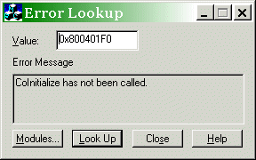
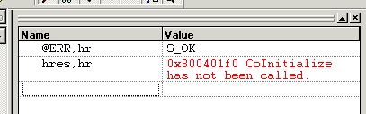

Com组件
如何查看本地的Com组件
oleview.exe是在 Windows SDK 中提供的应用程序，它显示计算机上安装的 COM 对象及其支持的接口。 可以使用此对象查看器查看类型库和接口。
OLE/COM 对象查看器应用位于 \Program Files (x86) \Windows Kits\10[version][architecture]\oleview.exe的 Windows SDK 中。
遇到程序调用的com，根据其id到注册表(win+r,regedit)中搜索，找到后复制其路径在oleview中进行搜索后即显示其com的method及event结构。
Introduction to COM - What It Is and How to Use It
本章目的是理解COM的基本概念，内容包括COM规范简介，重要的COM术语以及如何重用现有的COM组件。
COM即组件对象模型（Component Object Model），本章包括如下内容:
- COM――到底是什么？――COM标准的要点介绍，它被设计用来解决什么问题
- 基本元素的定义――COM术语以及这些术语的含义
- 使用和处理COM对象――如何创建、使用和销毁COM对象
- 基本接口――描述IUnknown基本接口及其方法
- 掌握串的处理――在COM代码中如何处理串
- 应用COM技术――例子代码，举例说明本章所讨论的所有概念
- 处理HRESULT――HRESULT类型描述，如何监测错误及成功代码
COM 到底是什么
简单地说，COM是一种跨应用和语言共享二进制代码的方法。与C++不同，它提倡源代码重用。ATL便是一个很好的例证。源码级重用虽然好，但只能用于C++。它还带来了名字冲突的可能性，更不用说不断拷贝重用代码而导致工程膨胀和臃肿。
Windows使用DLLs在二进制级共享代码。这也是Windows程序运行的关键――重用kernel32.dll, user32.dll等。但DLLs是针对C接口而写的，它们只能被C或理解C调用规范的语言使用。由编程语言来负责实现共享代码，而不是由DLLs本身。这样的话DLLs的使用受到限制。MFC引入了另外一种MFC扩展DLLs二进制共享机制。但它的使用仍受限制――只能在MFC程序中使用。
COM通过定义二进制标准解决了这些问题，即COM明确指出二进制模块（DLLs和EXEs）必须被编译成与指定的结构匹配。这个标准也确切规定了在内存中如何组织COM对象。COM定义的二进制标准还必须独立于任何编程语言（如C++中的命名修饰）。一旦满足了这些条件，就可以轻松地从任何编程语言中存取这些模块。由编译器负责所产生的二进制代码与标准兼容。这样使后来的人就能更容易地使用这些二进制代码。
在内存中，COM对象的这种标准形式在C++虚函数中偶尔用到，所以这就是为什么许多COM代码使用C++的原因。但是记住，编写模块所用的语言是无关的，因为结果二进制代码为所有语言可用。
基本元素的定义
接口只不过是一组函数。这些函数被称为方法。接口名字以大写的I开头，例如C++中的IShellLink，接口被设计成一个抽象基类，其中只有纯粹的虚拟函数。
接口可以从其它接口继承，这里所说的继承的原理就好像C++中的单继承。接口是不允许多继承的。
coclass（简称组件对象类――componentobject class）被包含在DLL或EXE中，并且包含着一个或者多个接口的代码。组件对象类（coclasss）实现这些接口。COM对象在内存中表现为组件对象类（coclasss）的一个实例。注意COM“类”和C++“类”是不相同的，尽管常常COM类实现的就是一个C++类。
COM服务器是包含了一个或多个coclass的二进制（DLL或EXE）。
注册（Registration）是创建注册表入口的一个过程，告诉Windows 操作系统COM服务器放在什么位置。取消注册（Unregistration）则相反――从注册表删除这些注册入口。
GUID（谐音为“fluid”，意思是全球唯一标示符――globally unique identifier）是个128位的数字。它是一种独立于COM编程语言的标示方法。每一个接口和coclass有一个GUID。因为每一个GUID都是全球唯一的，所以避免了名字冲突（只要你用COM API创建它们）。有时你还会碰到另一个术语UUID（意思也是全球唯一标示符――universally unique identifier）。UUIDs和GUIDs在实际使用时的用途是一样的。
类ID或者CLSID是命名coclass的GUID。接口ID或者IID是命名接口的GUID。
在COM中广泛地使用GUID有两个理由：
- GUIDs只是简单的数字，任何编程语言都可以对之进行处理；
- GUIDs可以在任何机器上被任何人创建，一旦完成创建，它就是唯一的。因此，COM开发人员可以创建自己特有的GUIDs而不会与其它开发人员所创建的GUIDs有冲突。这样就消除了集中授权发布GUIDs的必要。
HRESULT是COM用来返回错误和成功代码的整型数字，除此之外，别无它意，虽然以H作前缀，但没有句柄之意。
最后，COM库是在你使用COM时与你交互的操作系统的一部分，它常常指的就是COM本身。但是为了避免混淆才分开描述的。
使用和处理COM对象
每一种语言都有其自己处理对象的方式。例如，C++是在栈中创建对象，或者用new动态分配。因为COM必须独立于语言，所以COM库为自己提供对象管理例程。下面是对COM对象管理和C++对象管理所做的一个比较：
创建一个新对象
- C++中，用new操作符，或者在栈中创建对象。
- COM中，调用COM库中的API。
删除对象
- C++中，用delete操作符，或将栈对象踢出。
- COM中，所有的对象保持它们自己的引用计数。调用者必须通知对象什么时候用完这个对象。当引用计数为零时，COM对象将自己从内存中释放。
由此可见，对象处理的两个阶段：创建和销毁，缺一不可。当创建COM对象时要通知COM库使用哪一个接口。如果这个对象创建成功，COM库返回所请求接口的指针。然后通过这个指针调用方法，就像使用常规C++对象指针一样。
创建COM对象
为了创建COM对象并从这个对象获得接口，必须调用COM库的API函数，CoCreateInstance()。其原型如下：
HRESULT CoCreateInstance (
REFCLSID rclsid,
LPUNKNOWN pUnkOuter,
DWORD dwClsContext,
REFIID riid,
LPVOID* ppv );
参数解释：
- rclsid：coclass的CLSID，例如，可以传递CLSID_ShellLink创建一个COM对象来建立快捷方式。
- pUnkOuter：这个参数只用于COM对象的聚合，利用它向现有的coclass添加新方法。参数值为null表示不使用聚合。
- dwClsContext：表示所使用COM服务器的种类。本文使用的是最简单的COM服务器，一个进程内（in-process）DLL，所以传递的参数值为CLSCTX_INPROC_SERVER。注意这里不要随意使用CLSCTX_ALL（在ATL中，它是个缺省值），因为在没有安装DCOM的Windows95系统上会导致失败。
- riid：请求接口的IID。例如，可以传递IID_IShellLink获得IShellLink接口指针。
- ppv：接口指针的地址。COM库通过这个参数返回请求的接口。
当你调用CoCreateInstance()时，它负责在注册表中查找COM服务器的位置，将服务器加载到内存，并创建你所请求的coclass实例。以下是一个调用的例子，创建一个CLSID_ShellLink对象的实例并请求指向这个对象IShellLink接口指针。
HRESULT hr;
IShellLink* pISL;
hr = CoCreateInstance ( CLSID_ShellLink, //coclass 的CLSID
NULL, //不是用聚合
CLSCTX_INPROC_SERVER, //服务器类型
IID_IShellLink, //接口的IID
(void**)&pISL ); // 指向接口的指针
if ( SUCCEEDED ( hr ) )
{
// 用pISL调用方法
}
else
{
// 不能创建COM对象，hr 为出错代码
}
首先声明一个接受CoCreateInstance()返回值的HRESULT和IShellLink指针。调用CoCreateInstance()来创建新的COM对象。如果hr接受到一个表示成功的代码，则SUCCEEDED宏返回TRUE，否则返回FALSE。FAILED是一个与SUCCEEDED对应的宏用来检查失败代码。
删除COM对象
前面说过，你不用释放COM对象，只要告诉它们你已经用完对象。IUnknown是每一个COM对象必须实现的接口，它有一个方法，Release()。调用这个方法通知COM对象你不再需要对象。一旦调用了这个方法之后，就不能再次使用这个接口，因为这个COM对象可能从此就从内存中消失了。
如果你的应用程序使用许多不同的COM对象，因此在用完某个接口后调用Release()就显得非常重要。如果你不释放接口，这个COM对象（包含代码的DLLs）将保留在内存中，这会增加不必要的开销。如果你的应用程序要长时间运行，就应该在应用程序处于空闲期间调用CoFreeUnusedLibraries() API。这个API将卸载任何没有明显引用的COM服务器，因此这也降低了应用程序使用的内存开销。
继续用上面的例子来说明如何使用Release()：
// 像上面一样创建COM 对象， 然后，
if ( SUCCEEDED ( hr ) )
{
// 用pISL调用方法
// 通知COM 对象不再使用它
pISL->Release();
}
基本接口IUnknow
每一个COM接口都派生于IUnknown。这个名字有点误导人，其中没有未知（Unknown）接口的意思。它的原意是如果有一个指向某COM对象的IUnknown指针，就不用知道潜在的对象是什么，因为每个COM对象都实现IUnknown。IUnknown有三个方法：
AddRef()―― 通知COM对象增加它的引用计数。如果你进行了一次接口指针的拷贝，就必须调用一次这个方法，并且原始的值和拷贝的值两者都要用到。在本文的例子中没有用到AddRef()方法；Release()―― 通知COM对象减少它的引用计数。参见前面的Release()示例代码段；QueryInterface()―― 从COM对象请求一个接口指针。当coclass实现一个以上的接口时，就要用到这个方法；
前面已经看到了Release()的使用，但如何使用QueryInterface()呢?当你用CoCreateInstance()创建对象的时候，你得到一个返回的接口指针。如果这个COM对象实现一个以上的接口（不包括IUnknown），你就必须用QueryInterface()方法来获得任何你需要的附加的接口指针。QueryInterface()的原型如下：
HRESULT IUnknown::QueryInterface (
REFIID iid,
void** ppv );
以下是参数解释：
- iid：所请求的接口的IID。
- ppv：接口指针的地址，
QueryInterface()通过这个参数在成功时返回这个接口。
让我们继续 shell link 的例子，它实现了IShellLink和IPersistFile接口。如果你已经有一个IShellLink指针，pISL，可以从COM对象请求IPersistFile接口：
HRESULT hr;
IPersistFile* pIPF;
hr = pISL->QueryInterface (IID_IPersistFile, (void**) &pIPF );
然后使用SUCCEEDED宏检查hr的值以确定QueryInterface()的调用情况，如果成功的话你就可以象使用其它接口指针那样使用新的接口指针，pIPF。但必须记住调用pIPF->Release()通知COM对象已经用完这个接口。
处理String
不管什么时候，只要COM方法返回一个串，这个串都是Unicode串（这里指的是写入COM规范的所有方法）。Unicode是一种字符编码集，类似ASCII，但用两个字节表示一个字符。如果你想更好地控制或操作串的话，应该将它转换成TCHAR类型串。
TCHAR和以_t开头的函数（如_tcscpy()）被设计用来让你用相同的源代码处理Unicode和ANSI串。在大多数情况下编写的代码都是用来处理ANSI串和ANSI WindowsAPIs，所以在下文中，除非另外说明，我所说的字符/串都是指TCHAR类型。你应该熟练掌握TCHAR类型，尤其是当你阅读其他人写的有关代码时，要特别注意TCHAR类型。
当你从某个COM方法返回得到一个Unicode串时，可以用下列几种方法之一将它转换成char类型串：
- 调用 WideCharToMultiByte()API；
- 调用CRT 函数wcstombs()；
- 使用CString 构造器或赋值操作(仅用于MFC )；
- 使用ATL 串转换宏；
1.WideCharToMultiByte()
你可以用WideCharToMultiByte()将一个Unicode串转换成一个ANSI串。此函数的原型如下：
int WideCharToMultiByte (
UINT CodePage,
DWORD dwFlags,
LPCWSTR lpWideCharStr,
int cchWideChar,
LPSTR lpMultiByteStr,
int cbMultiByte,
LPCSTR lpDefaultChar,
LPBOOL lpUsedDefaultChar );
以下是参数解释：
-
CodePage：Unicode字符转换成的代码页。你可以传递CP_ACP来使用当前的ANSI代码页。代码页是256个字符集。字符0――127与ANSI编码一样。字符128――255与ANSI字符不同，它可以包含图形字符或者读音符号。每一种语言或地区都有其自己的代码页，所以使用正确的代码页对于正确地显示重音字符很重要。 -
dwFlags：dwFlags 确定Windows如何处理“复合” Unicode字符，它是一种后面带读音符号的字符。如è就是一个复合字符。如果这些字符在CodePage参数指定的代码页中，不会出什么事。否则，Windows必须对之进行转换。传递WC_COMPOSITECHECK使得这个API检查非映射复合字符。传递WC_SEPCHARS使得Windows将字符分为两段，即字符加读音，如e`。传递WC_DISCARDNS使得Windows丢弃读音符号。传递WC_DEFAULTCHAR使得Windows用lpDefaultChar参数中说明的缺省字符替代复合字符。缺省行为是WC_SEPCHARS。 -
lpWideCharStr要转换的Unicode串。 -
cchWideCharlpWideCharStr在Unicode 字符中的长度。通常传递-1，表示这个串是以0x00结尾。 -
lpMultiByteStr接受转换的串的字符缓冲 cbMultiBytelpMultiByteStr的字节大小。 -
lpDefaultChar可选――当dwFlags包含WC_COMPOSITECHECK | WC_DEFAULTCHAR并且某个Unicode字符不能被映射到同等的ANSI串时所传递的一个单字符ANSI串，包含被插入的“缺省”字符。可以传递NULL，让API使用系统缺省字符（一种写法是一个问号）。 -
lpUsedDefaultChar可选――指向BOOL类型的一个指针，设置它来表示是否缺省字符曾被插入ANSI串。可以传递NULL来忽略这个参数。
不搞清楚这些东西就很难搞清楚COM的串处理。何况文档中列出的比实际应用的要复杂得多。下面就给出了如何使用这个API的例子：
// 假设已经有了一个Unicode 串 wszSomeString...
char szANSIString[MAX_PATH];
WideCharToMultiByte (CP_ACP, //ANSI 代码页
WC_COMPOSITECHECK, // 检查重音字符
wszSomeString, //原Unicode 串
-1, //-1 意思是串以0x00结尾
szANSIString, //目的char字符串
sizeof(szANSIString), // 缓冲大小
NULL, //肥缺省字符串
NULL); //忽略这个参数
调用这个函数后，szANSIString将包含Unicode串的ANSI版本。调用这个函数后，szANSIString将包含Unicode串的ANSI版本。
2.wcstombs()
这个CRT函数wcstombs()是个简化版，但它终结了WideCharToMultiByte()的调用，所以最终结果是一样的。其原型如下：
size_t wcstombs (
char* mbstr,
const wchar_t* wcstr,
size_t count );
以下是参数解释：
mbstr：接受结果ANSI串的字符（char）缓冲。wcstr：要转换的Unicode串。count：mbstr参数所指的缓冲大小。
wcstombs()在它对WideCharToMultiByte()的调用中使用WC_COMPOSITECHECK | WC_SEPCHARS标志。用wcstombs()转换前面例子中的 Unicode串，结果一样：
wcstombs ( szANSIString, wszSomeString, sizeof(szANSIString));
3.CString
MFC中的CString包含有构造函数和接受Unicode串的赋值操作，所以你可以用CString来实现转换。例如：
// 假设有一个Unicode串wszSomeString...
CString str1 ( wszSomeString ); // 用构造器转换
CString str2;
str2 = wszSomeString; // 用赋值操作转换
4.ATL宏
ATL有一组很方便的宏用于串的转换。W2A()用于将Unicode串转换为ANSI串（记忆方法是“wide to ANSI”――宽字符到ANSI）。实际上使用OLE2A()更精确，“OLE”表示的意思是COM串或者OLE串。下面是使用这些宏的例子：
// 还是假设有一个Unicode串wszSomeString...
{
char szANSIString[MAX_PATH];
USES_CONVERSION; // 声明这个宏要使用的局部变量
lstrcpy ( szANSIString, OLE2A(wszSomeString));
}
OLE2A()宏“返回”转换的串的指针，但转换的串被存储在某个临时栈变量中，所以要用lstrcpy()来获得自己的拷贝。其它的几个宏是W2T()（Unicode 到 TCHAR）以及W2CT()（Unicode到常量TCHAR串）。
有个宏是OLE2CA()（Unicode到常量char串），可以被用到上面的例子中，OLE2CA()实际上是个更正宏，因为lstrcpy()的第二个参数是一个常量char*，关于这个问题本文将在以后作详细讨论。
另一方面，如果你不想做以上复杂的串处理，尽管让它还保持为Unicode串，如果编写的是控制台应用程序，输出/显示Unicode串时应该用全程变量std::wcout，如：
wcout << wszSomeString;
但是要记住，std::wcout只认Unicode，所以你要是“正常”串的话，还得用std::cout输出/显示。对于Unicode串文字量，要使用前缀L标示，如：
wcout << L"The Oraclesays..." << endl << wszOracleResponse;
如果保持串为Unicode，编程时有两个限制：
- 必须使用
wcsXXX()Unicode串处理函数，如wcslen()； - 在Windows 9x环境中不能在Windows API中传递Unicode串。要想编写能在9x和NT上都能运行的应用，必须使用TCHAR类型，详情请参考MSDN；
用例子总结上述内容
使用单接口COM对象
第一个例子展示的是单接口COM对象。这可能是你碰到得最简单的例子。它使用shell中的活动桌面组件对象类（CLSID_ActiveDesktop）来获得当前桌面墙纸的文件名。请确认系统中安装了活动桌面（Active Desktop）。以下是编程步骤：
- 初始化COM库。 （Initialize）；
- 创建一个与活动桌面交互的COM对象，并取得
IActiveDesktop接口； - 调用COM对象的
GetWallpaper()方法； - 如果
GetWallpaper()成功，则输出/显示墙纸文件名； - 释放接口（
Release()）； - 收回COM库（Uninitialize）；
WCHAR wszWallpaper [MAX_PATH];
CString strPath;
HRESULT hr;
IActiveDesktop* pIAD;
// 1. 初始化COM库（让Windows加载DLLs）。通常是在程序的InitInstance()中调用
// CoInitialize ( NULL )或其它启动代码。MFC程序使用AfxOleInit()
CoInitialize ( NULL );
// 2. 使用外壳提供的活动桌面组件对象类创建COM对象。
// 第四个参数通知COM需要什么接口(这里是IActiveDesktop).
hr = CoCreateInstance(
CLSID_ActiveDesktop,
NULL,
CLSCTX_INPROC_SERVER,
IID_IActiveDesktop,
(void**) &pIAD );
if ( SUCCEEDED(hr) )
{
// 3. 如果COM对象被创建成功，则调用这个对象的GetWallpaper() 方法。
hr = pIAD->GetWallpaper ( wszWallpaper,MAX_PATH, 0 );
if ( SUCCEEDED(hr) )
{
// 4. 如果 GetWallpaper() 成功，则输出它返回的文件名字。
// 注意这里使用wcout 来显示Unicode 串wszWallpaper. wcout 是
// Unicode 专用，功能与cout.相同。
wcout << L"Wallpaper pathis:\n " << wszWallpaper<< endl << endl;
}
else
{
cout << _T("GetWallpaper()failed.") << endl << endl;
}
// 5. 释放接口。
pIAD->Release();
}
else
{
cout << _T("CoCreateInstanc()failed.") << endl << endl;
}
// 6. 收回COM库。MFC 程序不用这一步，它自动完成。
CoUninitialize();
在这个例子中，输出/显示Unicode 串 wszWallpaper用的是std::wcout。
使用多接口的COM对象
第二个例子展示了如何使用一个提供单接口的COM对象QueryInterface()函数。其中的代码用shell的Shell Link组件对象类创建我们在第一个例子中获得的墙纸文件的快捷方式。以下是编程步骤：
- 初始化 COM 库；
- 创建一个用于建立快捷方式的COM 对象并取得IShellLink 接口；
- 调用IShellLink 接口的
SetPath()方法； - 调用对象的
QueryInterface()函数并取得IPersistFile接口； - 调用IPersistFile 接口的
Save()方法； - 释放接口；
- 收回COM库；
CString sWallpaper = wszWallpaper; // 将墙纸路径转换为ANSI
IShellLink* pISL;
IPersistFile* pIPF;
// 1. 初始化COM库(让Windows 加载DLLs). 通常在InitInstance()中调用
// CoInitialize ( NULL )或其它启动代码。MFC 程序使用AfxOleInit()。
CoInitialize ( NULL );
// 2. 使用外壳提供的Shell Link组件对象类创建COM对象。.
// 第四个参数通知COM 需要什么接口(这里是IShellLink)。
hr = CoCreateInstance (
CLSID_ShellLink,
NULL,
CLSCTX_INPROC_SERVER,
IID_IShellLink,
(void**)&pISL
);
if ( SUCCEEDED(hr) )
{
// 3. 设置快捷方式目标(墙纸文件)的路径。
hr = pISL->SetPath ( sWallpaper );
if ( SUCCEEDED(hr) )
{
// 4. 获取这个对象的第二个接口(IPersistFile)。
hr = pISL->QueryInterface (IID_IPersistFile, (void**) &pIPF );
if ( SUCCEEDED(hr) )
{
// 5. 调用Save() 方法保存某个文件得快捷方式。第一个参数是
// Unicode 串。
hr = pIPF->Save (L"C:\\wallpaper.lnk", FALSE );
// 6a. 释放IPersistFile 接口。
pIPF->Release();
}
}
// 6. 释放IShellLink 接口。
pISL->Release();
}
// 输出错误信息部分这里省略。
// 7. 收回COM 库。MFC 程序不用这一步，它自动完成。
CoUninitialize();
处理HRESULT
这一部分准备用SUCCEEDED 和 FAILED宏进行一些简单的出错处理。主要是深入研究从COM方法返回的HRESULT，以便达到完全理解和熟练应用。
HRESULT是个32位符号整数，其非负值表示成功，负值表示失败。HRESULT有三个域：程度位（表示成功或失败），功能码和状态码。功能码表示HRESULT来自什么组件或程序。微软给不同的组件多赋予功能码，如：COM、任务调度程序等都有功能码。功能码是个16位的值，仅此而已，没有其它内在含义；它在数字和意义之间是随意关联的；类似GetLastError()返回的值。
如果你在winerror.h头文件中查找错误代码，会看到许多按照[功能]_[程度]_[描述]命名规范列出的HRESULT值，由组件返回的通用的 HRESULT（类似E_OUTOFMEMORY）在名字中没有功能码。如 ：
REGDB_E_READREGDB：功能码 = REGDB, 指“注册表数据库（registry database）”；程度 = E 意思是错误（error）；描述 = READREGDB 是对错误的描述（意思是不能读注册表数据库）。S_OK: 没有功能码――通用（generic）HRESULT；程度=S；表示成功（success）；OK 是状态描述表示一切都好（everything''sOK）。
好在有一种比察看winerror.h文件更容易的方法来确定HRESULT的意思。使用VC提供的错误查找工具（Error Lookup）可以轻松查到为HRESULT内建功能码。例如，假设你在CoCreateInstance()之前忘了调用CoInitialize()。CoCreateInstance()返回的值是0x800401F0。你只要将这个值输入到错误查找工具按“Look Up”按钮，便可以看到错误信息描述“尚未调用CoInitialize”如下图所示：

另外一种查找HRESULT描述的方法是在调试器中。假设有一个HRESULT变量是hres。在Watch窗口的左边框中输入“hres,hr”，表示想要看的值，“hr”便会通知VC显示HRESULT所描述的值。如下图所示：
